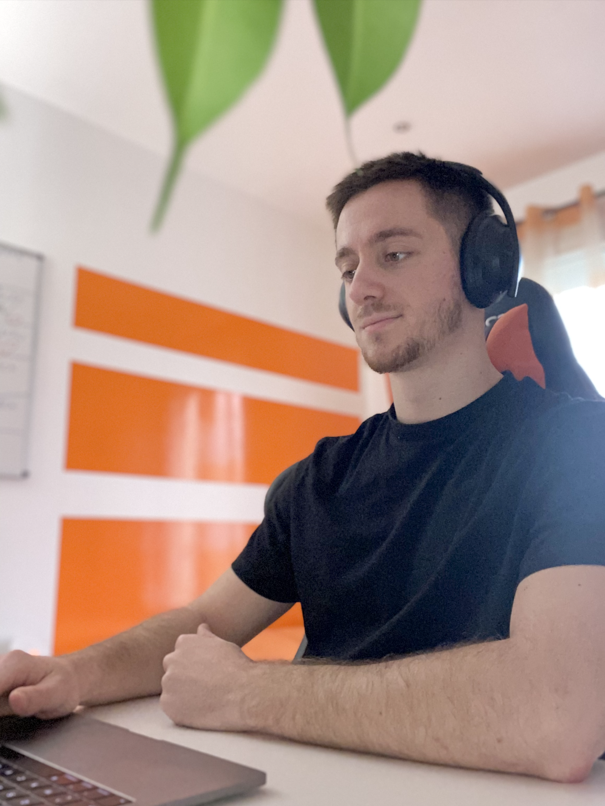

Je m'appelle Benjamin LANERY, j'ai 22 ans, je suis en alternance chez Nickel en tant que Product Owner et je suis en 4ème année à la WebSchoolFactory
Manager de l’innovation numérique Webschoolfactory2018 - 2023
Expérience
Compétences
Diplômes et certifications
Hobbies : J'aime les nouvelles technologies, le sport, et toutes les problématiques sur l'environnement